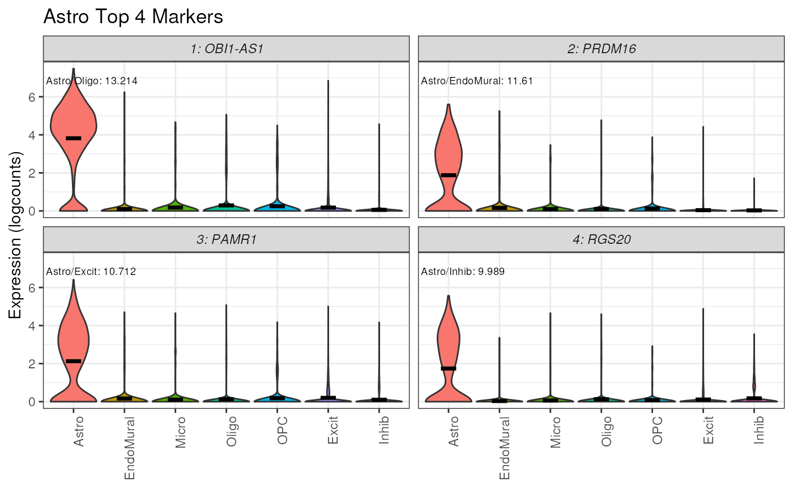

R/plot_marker_express.R
plot_marker_express.RdThis function plots the top n marker genes for a specified cell type based off of
the stats table from get_mean_ratio2().
The gene expression is plotted as violin plot with plot_gene_express and adds
annotations to each plot.
plot_marker_express(
sce,
stats,
cell_type,
n_genes = 4,
rank_col = "MeanRatio.rank",
anno_col = "MeanRatio.anno",
gene_col = "gene",
cellType_col = "cellType",
color_pal = NULL,
plot_points = FALSE,
ncol = 2
)SummarizedExperiment-class object
A data.frame() generated by get_mean_ratio and/or findMarkers_1vAll
A character() target cell type to plot markers for
An integer() of number of markers you'd like to plot
The character() name of column to rank genes by in stats
The character() name of column containing annotation in stats
The character() name of column containing gene name in stats should be the same syntax as rownames(sce)
The character() name of colData column containing cell type for sce data,
matches cellType.target in stats
A named character(1) vector that contains a color pallet matching the cell_type values
A logical indicating whether to plot points over the violin,
defaults to FALSE as these often become overplotted and quite large (especially when saved as PDF)
= Number of columns for the facet in the final plot. Defaults to 2.
plotExpression style violin plot for selected marker genes
Other expression plotting functions:
plot_gene_express(),
plot_marker_express_ALL(),
plot_marker_express_List()
if (!exists("sce_DLPFC_example")) sce_DLPFC_example <- fetch_deconvo_data("sce_DLPFC_example")
#> 2024-07-29 15:03:09.087746 loading file /github/home/.cache/R/BiocFileCache/26f75fbd2cd_sce_DLPFC_example.Rdata%3Frlkey%3Dv3z4u8ru0d2y12zgdl1az07q9%26st%3D1dcfqc1i%26dl%3D1
## plot the top markers for Astrocytes in
plot_marker_express(
sce = sce_DLPFC_example,
stat = marker_test,
cellType_col = "cellType_broad_hc",
cell_type = "Astro",
gene_col = "gene"
)
#> No summary function supplied, defaulting to `mean_se()`
#> No summary function supplied, defaulting to `mean_se()`
#> No summary function supplied, defaulting to `mean_se()`
#> No summary function supplied, defaulting to `mean_se()`
